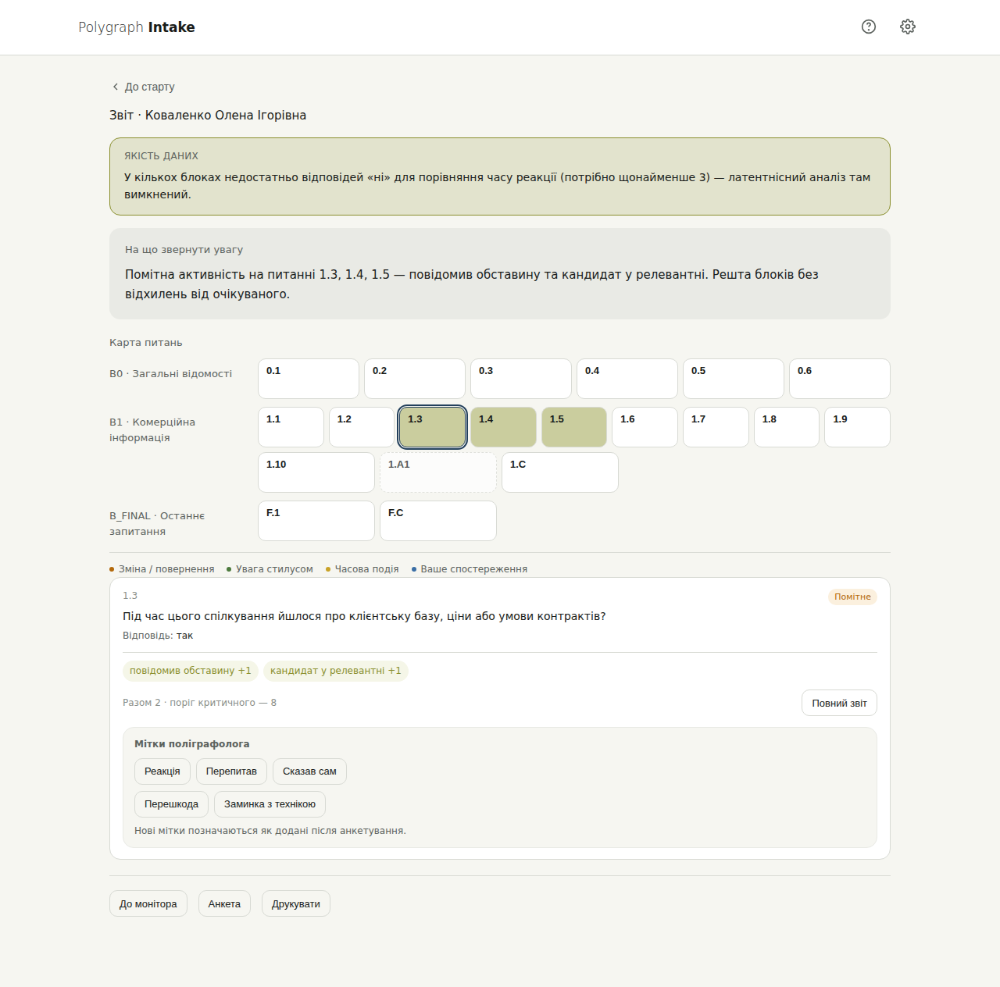
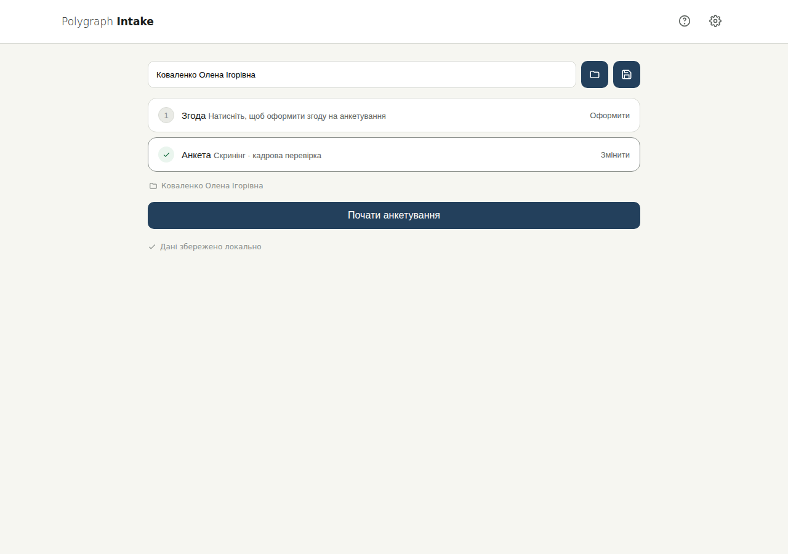
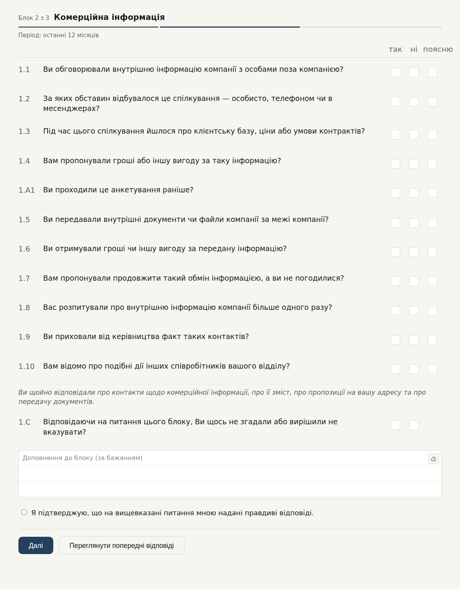
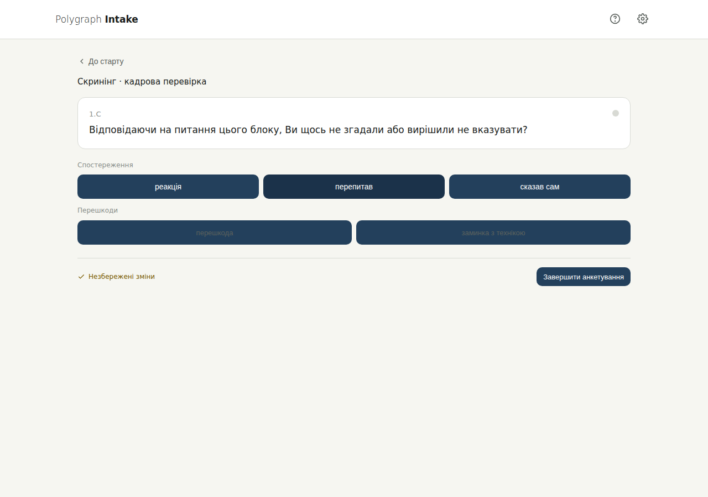

Polygraph Intake перетворює анкету попереднього опитування з формальності на робочий інструмент: респондент проходить продуману послідовність питань на планшеті, а поліграфолог отримує карту, з чого почати розмову.
Працює офлайн. Дані респондента лишаються локально на пристрої поліграфолога.

Бланк на папері чи в Google Forms виконує формальну функцію, але не працює як підготовка до бесіди.
Без структурованого повторного пригадування людина відповідає один раз і більше не повертається до теми — деталі, які могли б спливти, лишаються поза анкетою.
Перечитати десятки відповідей і зіставити їх із поведінкою під час заповнення — до початку бесіди, поки респондент чекає — фізично не встигнути.
Аркуш відповідей «так/ні» не показує, на чому зосередитись у передтестовій бесіді і які теми підняти першими.
Чотири кроки одного циклу — без перемикання між інструментами й без ручного зведення результатів.
Поліграфолог вносить дані респондента, оформлює згоду і завантажує потрібну анкету. Програма одразу показує, що готово, а що ще потрібно зробити перед стартом.

Відповідь «так» чи «поясню» автоматично відкриває додаткові уточнювальні питання. Наприкінці кожного блоку — коротке нагадування-recap і закриваюче питання, яке дає ще один шанс щось пригадати.

Монітор показує поточне питання респондента в реальному часі. Поліграфолог одразу ставить власні позначки — реакцію, повторне запитання, самостійне уточнення — не чекаючи завершення.

Після завершення — текстове зведення й кольорова карта всіх питань за рівнем значущості. Клік по будь-якій плашці розкриває деталі: що саме привернуло увагу і чому.
Коли людині нема чого приховувати, розгорнуте, «незручне на вигляд» питання її не напружує понад норму. Коли є що приховувати — те саме питання звужує простір, де можна сховатися.
Формулювання нейтральні, ствердні, без частки «не» і без звинувачувального тону — тому питання самі по собі не підвищують тривожність. Калібрувальний блок на початку вчить систему, як саме ця людина читає й відповідає, перш ніж оцінювати щось змістовне. Показники лишаються рівними по всій анкеті.
Широкі формулювання, що перекривають усі канали дії, і повторні точки пригадування наприкінці кожного блоку та всієї анкети поступово звужують простір для «я про це не подумав». Відхилення природно проявляються саме на релевантних темах — не через тиск тону, а через саму невідворотність охоплення.
Анкета і поведінкові метрики під час її заповнення — це тріаж: які теми підняти в передтестовій бесіді першими, на чому затриматись, які шлюзи розглядати як кандидати в релевантні для самого тесту.
Валідизованих показників точності для самостійно заповнюваної анкети з вільною навігацією не існує. Остаточне рішення в кожному конкретному випадку ухвалює поліграфолог, спираючись на бесіду, а не на цифри зі звіту.
Відповідь «так» чи «поясню» відкриває від 2 до 6 додаткових питань — глибина залежить від того, наскільки очікуваною є ця відповідь для конкретної теми.
Перед змістовними питаннями система вимірює, як швидко саме ця людина читає й відповідає — і порівнює її далі з нею самою, а не з абстрактним середнім.
Поліграфолог бачить прогрес респондента в реальному часі і ставить власні позначки-спостереження прямо під час заповнення, не чекаючи звіту.
Після завершення — кольорова візуалізація всіх питань анкети за рівнем значущості, з якої видно, що заслуговує на першочергову увагу в бесіді.
Коротке нагадування наприкінці кожного блоку і окремий фінальний розділ, що повертається до кожної пройденої теми ще раз.
Робота повністю офлайн — дані респондента лишаються на пристрої поліграфолога і нікуди не передаються.
Текстове зведення показує, куди дивитись першою. Карта питань показує, наскільки саме. Деталь-картка пояснює, чому.
Коротке текстове зведення нагорі звіту одразу називає питання, які варто підняти в бесіді першими — без прочитання всієї анкети вручну.
Кожна плашка — окреме питання, теплове забарвлення показує рівень значущості. Один погляд замінює перечитування десятків відповідей.
Клік по плашці розкриває причини і вагу — конкретно, що саме привернуло увагу системи на цьому питанні.
Паперовий бланк ставить одні й ті самі питання всім респондентам. Polygraph Intake відкриває додаткові уточнення саме там, де відповідь це виправдовує — решта анкети лишається короткою.
Жоден бланк на папері не може виміряти, як швидко саме ця людина читає й відповідає, перш ніж перейти до змістовних питань. Тут це вбудовано в саму послідовність.
Google Forms показує відповіді після відправлення форми. Тут поліграфолог бачить прогрес і ставить позначки просто під час заповнення.
Recap наприкінці блоку і фінальний розділ, що повертається до кожної теми, — це не окрема функція, а частина того, як побудована сама анкета.
Робота повністю офлайн. Дані респондента лишаються локально на пристрої поліграфолога, а не на сторонньому сервері.
Напишіть нам, щоб дізнатись більше про впровадження, налаштування анкет під вашу практику і доступ до застосунку.